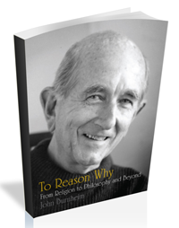

As I struggle with my ninety-fifth year, I would like to beg forgiveness from the true believers in sortition.Near forty years ago, in 1985, I published a book Is Democracy Possible? with the subtitle The Alternative to Parliamentary Democracy. The sortitionists believed that the alternative could only be to reject the electoral system and replace it by sortition. The will of the people could be expressed only by the people themselves, so they assumed I must support that view.
In fact what the book advocated was something different, but it was so far outside the mainstream that it attracted little attention. There is no point in offering answers to questions people apart from a few anarchists don’t ask. Everybody assumed that democracy was a matter of ensuring that the power of the state is invested in the nation’s people. Anybody who denied that was a traitor to democracy.
My contention was that the real problem was the concentration of all public goods in the powers of the state. Those who agreed with me on that point usually assumed that the only alternative was to manage the power of money to protect the rights of the owners of property -- radical capitalism. Robert Nozick, in Anarchy, State, and Utopia (1974), claimed that the public goods that the state did not provide could be provided on a moral basis by the rich. This was hardly a prescription for democracy. Clearly public goods are very important to human life. Many public goods are conventions that evolve from the interactions of people as unplanned byproducts. Our languages are the obvious example. However in complex technological societies, many of the goods we need to have at our disposal must involve rational choices between different possibilities that are accepted by all those who need them.
Some matters are best regulated by universal rules that treat different instances as if they were the same. That is the point of legality and equality. It is the essence of top down organisation. It has dominated community life and reduced community to conformity. In some matters it is necessary. But community has to be flexible to take into account the particular considerations that arise in particular circumstances of changing possibilities. A complex of decision-making bodies that can give different weight to similar considerations in each allows flexible development as various interactions bring new meanings to their components. The community is a lot of components adapting to each other, not a machine.
The primitive result was monarchy. There was a person who possessed the power to make all those decisions and enforce obedience to them. By a monopoly of legitimate force in a given territory traditional democracy sought to transfer that power to the inhabitants of a territory. That transfer needed to find a way of reaching agreement on all the decisions involved in organising public goods and some way of dealing with decisions that could only work if they were accepted by internationally effective procedures.
What was needed both nationally and internationally were rational decisions produced according to agreed procedures, but states often had recourse to violence to get what they wanted. The standard response to the need for a way of curbing violence is higher and more effective legal authorities. States are tamed by federation and many look to a world law- making United Nations.
The drive in this direction raises many misgivings. Modern communications mean that a centralised authority can effectively act at a distance and organise laws and procedures on a global scale. Moreover all the most urgent problems we all face can be solved only by globally organised action. Democrats are deeply torn between the need for global authority and the feeling that democracy is destroyed as the scope for effective participation is reduced to global uniformity.
My suggestion was and is that the way out of our predicament is the specialisation and fragmentation of authority. Each field of decision must be responsive to the specific factors that are most relevant to a precise problem. One way in which the point can be expressed is by substituting the traditional model of the nation state as a person, organised like a single person in which all the components are developed to perform under the instructions of the head. A better model of a human society is an ecological one in which each component has its own agenda with no single goal for all, but with the need to adapt to and coordinate with others to their mutual benefits. I argued that sortition of a sort can be used to put such organisms under the guidance of those who are most likely to benefit or be disadvantaged by its agenda. There are in fact many such authorities that are generally effective in their specific roles, governing such matters as rights to broadband, rights to travel under certain conditions and so on. More surprisingly a number of highly profitable agencies are both private firms, on a world scale and suppliers of a host of amazing public goods. The most obvious is Google.
What is urgently needed are specific authorities that legitimise and audit each such body to insist that they meet the requirements of the public goods they produce and offer. I now think that an organ that maintains a surveillance of these producers of public goods would be best staffed by people who are willing to serve these tasks and claim authority on moral rather than legal grounds. There is no substitute for experience and commitment in such a task. On the other hand, if people are chosen from a pool of those who claim to be willing and able to perform the specific task in a healthy society, that should result in a body that is both adequate to the task and sensitive to public discussion of various ideas of what could be done in a particular situation.
The obvious objection to the sort of surveillance bodies I postulate is that it is utterly unrealistic to suppose that existing political agencies would introduce and support their claims to legal authority especially on an international scale. My answer is that I assume that they would operate not in a legal status, but in moral and public opinion. They would be instituted not by states but by such organisations as international professional associations and other established entities that are based on cognitive and moral claims to be accepted by any group that claims to be competent to solve relevant specific problems of coordination, minority and ecological rights and so on.
Indeed, I postulate that most firms and other organisations that need public respect and cooperation of other bodies would find it in their interest to have their policies and proceedings certified to be both sustainable and acceptable. They will have good reason to welcome an appropriate surveillance of what they are doing. Morally based public opinion has shown itself to be extraordinarily effective in the pressure it has brought to bear on many public and private institutions and social practices in recent years. We have passed from a morality as a set of commandments imposed on an immoral human nature to a moral discourse that is grounded on a critical support for all the flourishing human sensibility that grows naturally out of a cooperative and open society.
The basis of sound and effective social conventions is not the law but the moral force of opinion. No doubt legal institutions backed by force will continue to be necessary to curb temptations to violence and fraud and perhaps some other matters. Morality rather than legality but it is not the basis of a sustainable human life.
My later book, The Demarchy Manifesto: For Better Public Policy (2016), was a mistaken attempt to find a compromise between those who sought to rely on the state for all public goods and those who wanted to rely on the transfer of power to moral communities constituted to meet the specific problems of particular concrete public goods.